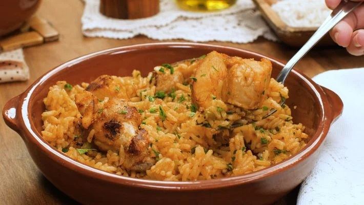
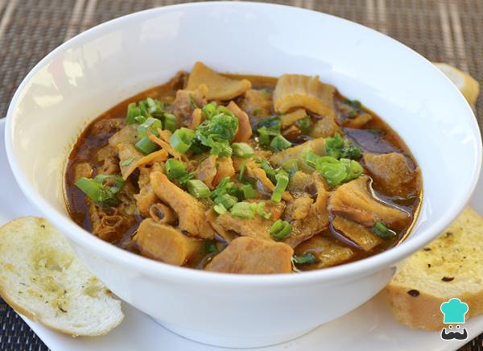
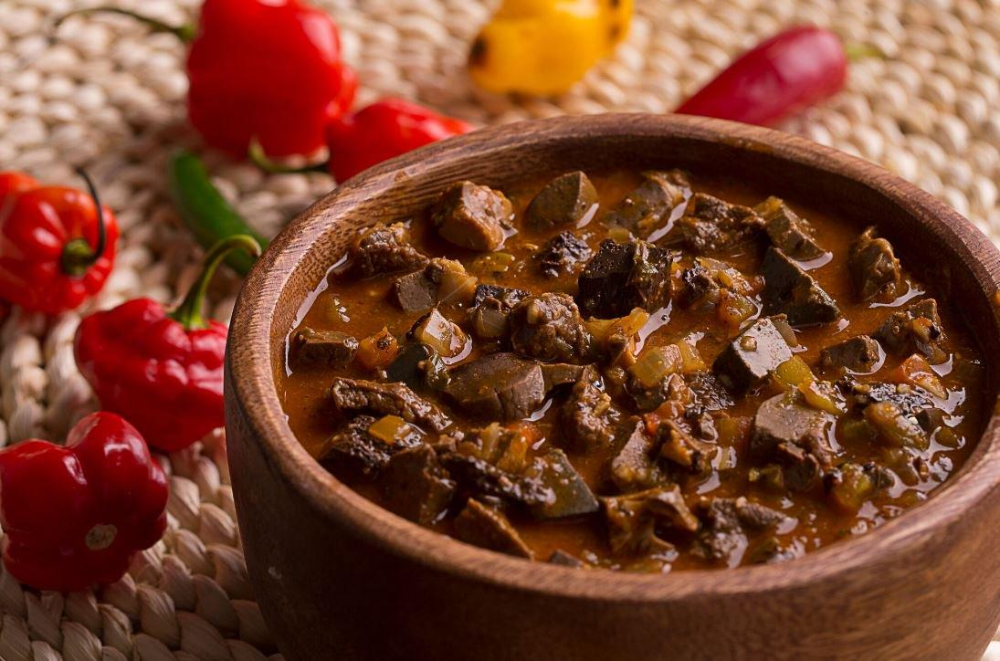
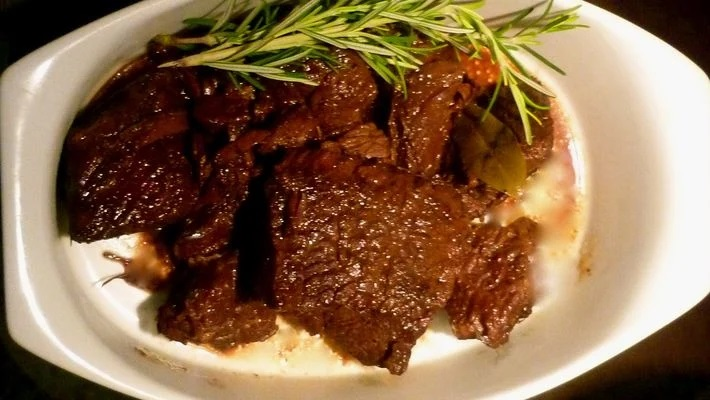

| Galinhada | |
|  | Galinhada é um prato culinário típico da culinária brasileira, mais especificamente dos estados de São Paulo, Minas Gerais (Triangulo Mineiro e Alto Paranaiba) e Goiás. De origem bandeirante, consiste em arroz cozido e frango em pedaços cozido. O tempero é composto de açafrão (que dá a cor amarelada típica ao arroz), vinagrete (opcional e à parte), e tutu de feijão. A galinhada tipicamente goiana leva guariroba (um tipo de palmito amargo) e pequi. Porções:Galinhada tradicionalGalinhada com pequi Opcionais:FarofaMaionese |
| Panelada | |
|  | A panelada é um prato típico do Nordeste brasileiro que é composto, principalmente, pelo bucho e tripas de boi, mas que também pode levar outras partes do animal. Além disso, é preparada com um caldo e servida com arroz para dar bastante sustança a quem come. Porções:Panelada 450mlPanelada 600ml Opcionais:Arroz porção PArroz porção MSalada |
| Sarapatel | |
|  | Sarapatel é uma designação comum de diversas iguarias preparadas com vísceras de porco, cabrito ou borrego. Nascido no Alto Alentejo, em Portugal, o sarapatel foi adaptado no Brasil e na culinária indo-portuguesa de Goa, Damão e Diu, outrora pertencentes ao Estado Português da Índia. Porções:Porção simplesPorção completa Opcionais:ArrozVatapáCaruruSalada |
| Assado de Panela | |
|  | A carne de panela, é um prato no qual um corte de carne é cortado ou picado em pedaços e cozido em uma panela de pressão por algum tempo, com molhos ou outros acompanhamentos como batata e mandioca, rendendo uma refeição com sabor incomparável. Porções:ArrozFeijãpAssado de Panela Opcionais:FarofaMaioneseSalada |